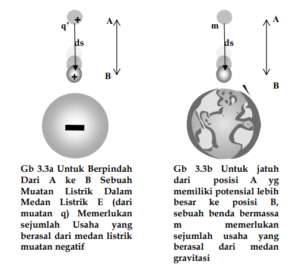
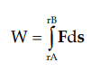

ENERGI POTENSIAL LISTRIK dan POTENSIAL LISTRIK
Energi potensial listrik didefinisikan sebagai “usaha (kerja) yang diperlukan untuk memindahkan muatan q’ dari A ke B”. Untuk memahami makna dari energi potensial listrik dan potensial listrik secara fisis, kita analogikan kembali terhadap energi potensial gravitasi.
Materi ini menjelaskan tentang analogi antara energi potensial listrik dan energi potensial gravitasi. Energi potensial di titik B lebih rendah dari energi potensial di titik A karena jaraknya pada muatan sumber lebih dekat. Hal ini sama dengan benda yang jatuh dari ketinggian tertentu ke posisi yang lebih rendah. Dalam hal ini, muatan negatif dianggap sebagai bumi dan muatan positif sebagai benda yang jatuh. Muatan positif "jatuh" dari energi potensial yang lebih tinggi di titik A ke energi potensial yang lebih rendah di titik B. Akibatnya, terjadi pengurangan energi potensial karena usaha yang dilakukan pada muatan positif untuk berpindah. Pada persamaan (1) tanda negatif menunjukkan pengurangan energi potensial tersebut.
Dari definisi usaha :
POTENSIAL DARI SUATU MUATAN TITIK
Potensial Listrik dari Muatan Titik dan Hubungannya dengan Medan Listrik Potensial di suatu titik, misalnya titik A (yang biasanya disebut potensial mutlak) adalah selisih atau beda potensial antara potensial di titik tersebut dengan sebuah titik yang amat jauh sehingga potensialnya bernilai nol, sehingga kita bisa dapatkan sebuah harga yang paling mendekati harga potensial “sebenarnya” :